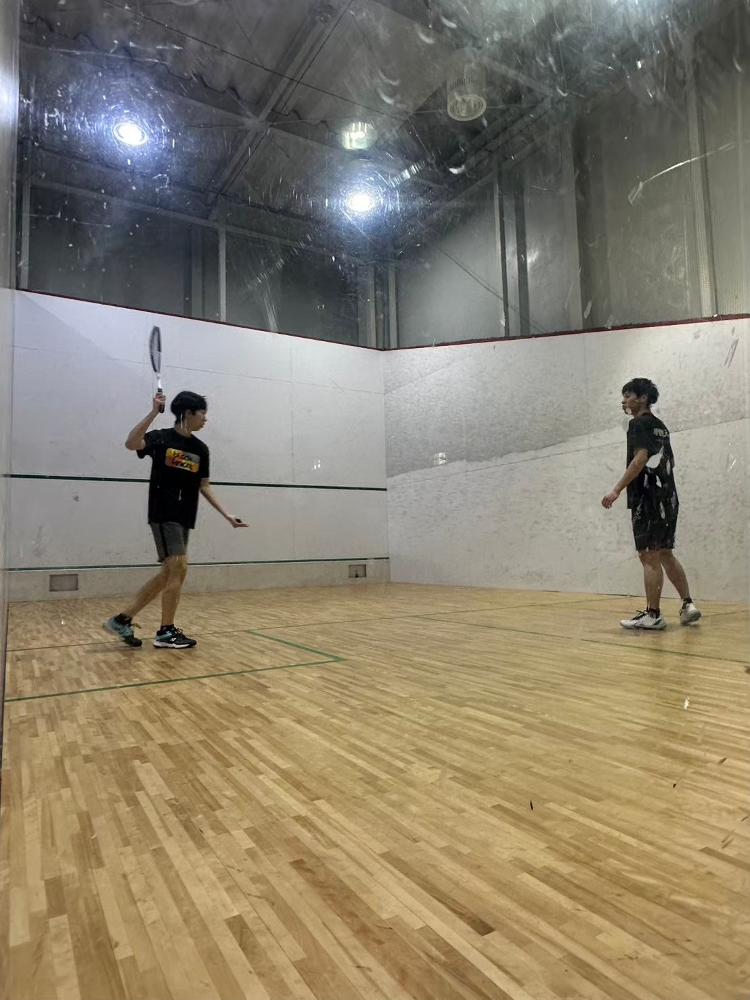

自己紹介
鹿児島県出身。小学校時代を総人口100人未満の離島・三島村竹島で過ごす。警察も商店もない自然豊かな環境で3年間を過ごし、自立心と柔軟性を培う。
中学では鹿児島市内に戻り卓球部に所属、市大会ベスト4の実績。高校では卓球から野球に転向、最後の大会でメンバー外となり挫折を経験するも、支える側の重要性を学ぶ。
独学で偏差値30から青山学院大学へ合格。逆境をチャンスに変える思考力と行動力を大切にしている。
青山学院大学 理工学部 機器創造工学科 3年
鹿児島県出身。小学校時代を総人口100人未満の離島・三島村竹島で過ごす。警察も商店もない自然豊かな環境で3年間を過ごし、自立心と柔軟性を培う。
中学では鹿児島市内に戻り卓球部に所属、市大会ベスト4の実績。高校では卓球から野球に転向、最後の大会でメンバー外となり挫折を経験するも、支える側の重要性を学ぶ。
独学で偏差値30から青山学院大学へ合格。逆境をチャンスに変える思考力と行動力を大切にしている。